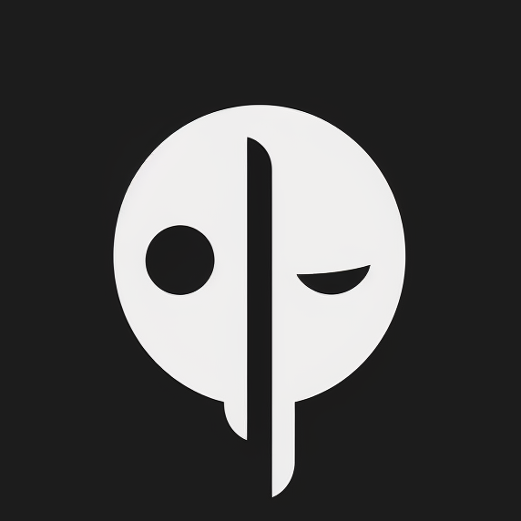
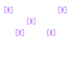
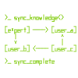
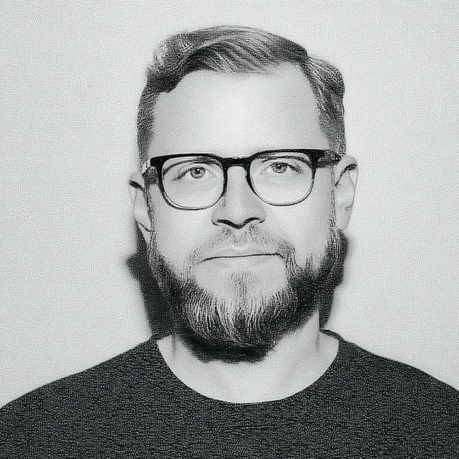
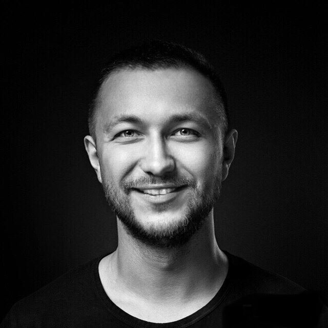

context engineering
Контекст = данные + структура + осмысление.
Новая валюта — не сами данные, а умение собрать из них рабочий контекст для себя, команды и агента.

AI Mindsethomepage / source-rich prototype
Технологии. Сознание. Сообщество. Среда, где люди выходят за рамки промптов, собирают персональные и командные AI-системы и превращают AI в экзоскелет мышления.


На главной нужен короткий manifest-like блок: почему AIM не выглядит как курс с лекциями и домашками, и почему среда важнее списка инструментов.
context engineering
Новая валюта — не сами данные, а умение собрать из них рабочий контекст для себя, команды и агента.
AI as exoskeleton
Не отдельный инструмент “для задач”, а слой, который держит персональный контекст, ритуалы, проекты и решения.
create, not consume
Не предзаписанный контент, а практика через создание: прототипы, системы, агенты, новые рабочие процессы.
environment matters
Предприниматели, топ-менеджеры, продакты, программисты, дизайнеры, футурологи и авторы медиа из 23 стран.
Не плоский архив ссылок, а понятная карта: куда идти человеку, команде, выпускнику, исследователю или non-profit проекту.
1 квартал = 1 лаборатория на стыке человеческого и машинного: персональные ассистенты, AI-first процессы, новая версия себя.
join waitlistСистема агентов для управления вниманием, задачами и знаниями.
подробнееАгентоцентричные организации: от персонального AI-стека до инфраструктуры компании.
открытьОтдельный спринт о здоровье, энергии и AI-поддержке привычек.
healthAI как среда для рефлексии, self-development и персональных практик.
selfdevLive-demo по четвергам, разборы кейсов, нетворкинг, гайды и практики.
подать заявкуДля команд: AI-стратегия, внедрения, инструменты, автоматизации.
подробнееHomepage должен быстро объяснять, что сейчас актуально, и не смешивать лаборатории, спринты, Space и consulting в одну непонятную витрину.

Основной маршрут для сборки персональной AI-операционной системы и AI-first процессов.
заявкаОтдельный продуктовый мир, который можно связывать с главной без копирования посадочной страницы.
health.aimindset.orgКомьюнити-слой для выпускников, фаундеров и специалистов: показывать как ongoing контур, не как “архив”.
community pageЗадача блока — объяснить длительность и глубину, а не продавать все сразу.
lab
Длинная среда с треками, экспертами, кейсами участников и сборкой собственной системы.
sprint
Конкретная тема: health, selfdev, Personal OS, AI-native orgs. Быстрее, уже, практичнее.
workshop / class
Мастер-классы, pitch lab, live-demo и короткие разборы для тех, кто хочет потрогать подход.
В активном варианте здесь только source-backed quote и реальные case assets из локального сайта.
Команда работает через Claude Code; тимлид видит токены и ROI каждого сотрудника.
case source: local V3
Встречи превращаются в задачи, проекты и контекст решений без ручной раскладки.
case source: local V3
Агент запускает ночные практики по cron и удерживает контекст без ручной подгрузки.
case source: local V3
Система дисциплины, где следующий шаг не нужно выбирать усилием воли.
case source: local V3Среди выпускников и участников старой страницы названы Профи.ру, SETTERS, Альфа-Банк, Bloomberg, Сколково и Авито. Этот блок должен быть коротким и вести к будущей About-странице.
Превью команды и экспертов без попытки превратить главную в полную people-page.

Основатель, стратегия

Системный архитектор

AI-native orgs

Executive coaching

Vibe-coding

Product architecture

Founder track
Teams, Space и Non-Profit показываются как живые маршруты, а старые проекты уходят в footer/legal/archive только ссылками.
AI-стратегия, внедрения, инструменты и автоматизации. Блок ведет на отдельную Team Track страницу.
aimindset.org/ai-mindset-consultingПрактическое комьюнити: live-demo, разборы кейсов, нетворкинг, гайды и практики.
aimindset.org/ai-mindset-communityОтдельное направление для non-profit проектов. На главной оно должно быть понятно названо, но не перегружено.
aimindset.org/non-profitКороткие ответы про формат, кому подходит, чем отличается Space и как попасть в актуальную программу.
Нет. Это среда практики: меньше лекций, больше сборки своих систем и рабочих процессов.
Если нужен главный маршрут — waitlist Main Lab. Если нужен вход в сообщество — Space.
Да, Team Track / consulting вынесен в отдельную страницу, чтобы не смешивать B2C и B2B сценарии.
Архив остается доступным в footer и на внутренних страницах, но не должен перегружать первый экран.